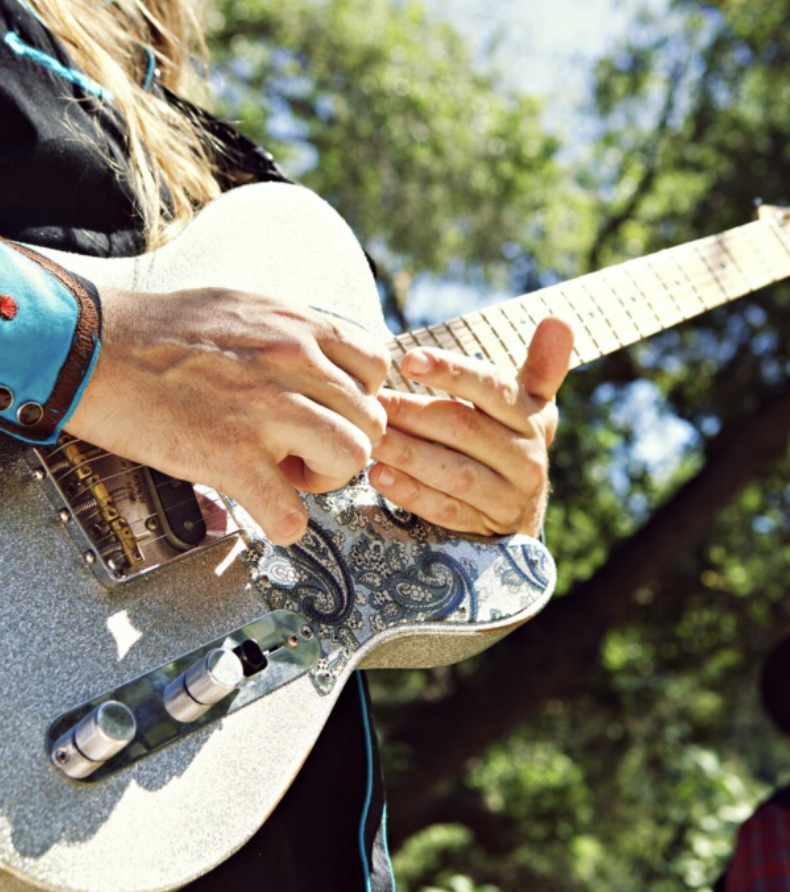

Rollin' Ramblers
Custom site built for a local band, designed for mobile-first engagement and visual identity. Includes gig promotion, social embeds, and themed design elements.
Custom site built for a local band, designed for mobile-first engagement and visual identity. Includes gig promotion, social embeds, and themed design elements.
Live business site for a home improvement company. Features responsive design, contact form integration, spam filtering, and custom domain email handling.
I built this as a love letter to Deep Purple — but also as a testbed for building a loud, unapologetic single-page site with killer visuals and readable code. Perfect for bands, tribute pages, or anyone else who prefers volume knobs over sliders.
A visually engaging character gallery designed to showcase unique personalities and themes. Built as a flexible layout that can be adapted for entertainment, creative portfolios, cast bios, or gaming-related content. Clean, responsive, and easy to customize for any brand style.
Ever wonder how websites get to the top of Google? This page breaks it down in plain English, with a clean layout that works on any screen. Bonus: I can help your site climb the ranks too.

A stylish product page for boutique guitar pedals, featuring vivid images, prices, and playful descriptions. Includes a signup form and embedded demo video — clean, responsive, and built to showcase gear with flair.
A clean, image-rich menu layout that makes it easy for restaurants to showcase their offerings and attract customers online.
A stylish, scroll-friendly layout that highlights key country music instruments—perfect for music blogs, education sites, or fan pages.
A bold, horror-themed reservation landing page with playful personality and responsive design. Ideal for boutique motels, Halloween events, or brands that dare to stand out — complete with custom fonts, iconic imagery, and a fully functional booking form.
A vibrant, fan-focused lyric and video page for Spanish indie pop band Ginebras. Features custom design, embedded YouTube content, and stylized song lyrics for enhanced user engagement — ideal for music blogs, artist portfolios, or fan showcase sites.
An interactive Star Trek–themed survey form styled as a Starfleet Academy application. Designed to engage fans with immersive branding, custom visuals, and accessible form inputs — perfect for themed events, fan communities, or sci-fi inspired UX portfolios.
As I wrap up my web design class this semester, I’ve been reflecting on what’s made a difference in my progress. Three things stand out:
First, learning how to implement SEO properly. It’s not just about stuffing keywords—it's about making sure people (and search engines) can actually find and understand your site and rank it at the top of the search results.
The importance of media queries and how to structure your html to make different screen sizes comply with minimal reworking of code.
Finally, I’ve committed to treating web design like a real craft, producing a publishable project every week. The world of coding is large and it's very easy to get lost and drown in a sea of possibilities. Being forced to narrow my focus and concentrate on webdesign has greatly improved my results.
Let’s make something cool. Or weird. Or useful. Bonus points if it’s all three.